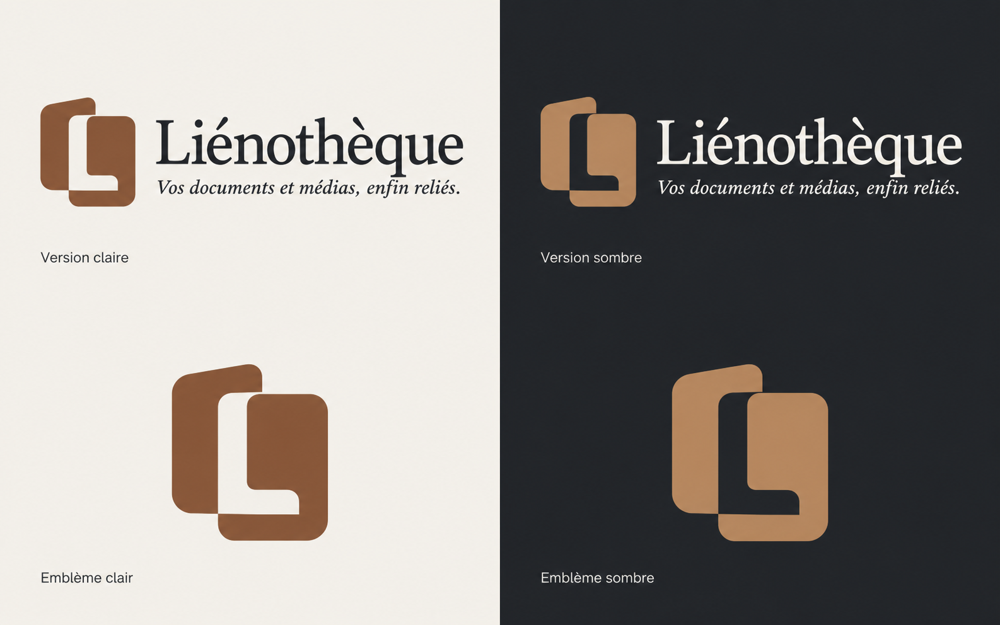
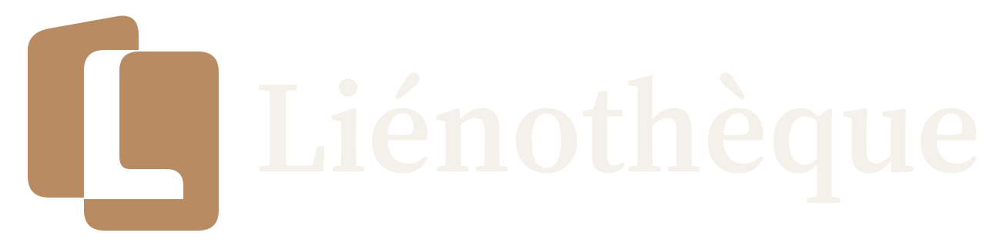
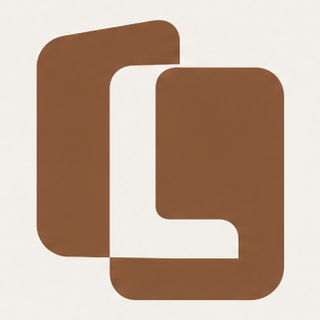
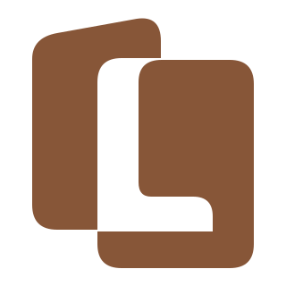

Méthode d’instrument
Page 127 ⟶ piste 41Catalogue de composants
Kit UI v1.1 · Jetons Liénothèque v3.0.1
Composants de référence et démonstrations interactives. Aucune donnée n’est envoyée.
Logo
Planche validée et reconstruction vectorielle : comparez les formes pleines, l’inclinaison et la réserve en L. Les tailles indiquées sont des pixels CSS.


512 px


64 px
32 px
16 px
Boutons et actions
Repos, survol, focus, chargement, désactivé. Un seul bouton principal par écran produit.
NotificationsOuvrir les champs
Champs et formulaires
Libellé permanent, aide reliée au champ et erreur explicite.
Choisissez un nom qui vous aide à la retrouver.
Ce nom existe déjà. Choisissez-en un autre.
Sélection et réglages
Contrôles natifs et interrupteur accessible au clavier.
Cartes de bibliothèque et reprise
Inter pour les noms et compteurs. Cours vidéo utilise le noyer.
Reprendre
Badges, états et alertes
La couleur ne porte jamais seule l’information.
9 à vérifierPrêtEn traitementSynchronisé
Les fichiers originaux sont conservés.
La synchronisation a échoué. Réessayez après avoir vérifié votre connexion.
9 correspondances attendent votre vérification.
Progression et dépôt
Trait de 3 px, pourcentage textuel et sélection alternative au glisser-déposer.
Cours vidéo n°4 · transcription
60 % · environ 4 min
Déposez des fichiers ici
Liénothèque proposera la bonne bibliothèque.
Tableaux, tri et pagination
Tableau sémantique ; pagination réelle sur des données de démonstration.
| Type | État |
|---|
Fenêtres et notifications
Dialogues natifs : focus contenu, Échap, retour au déclencheur.
États vides et chargement
Indiquer la prochaine action et conserver le contexte.
Chargement des éléments…
Lecteurs et relations
Commandes de démonstration uniquement ; brancher les sources autorisées à l’intégration.
Page 127 ⟶ piste 41
Aucun média chargé : commandes de démonstration.